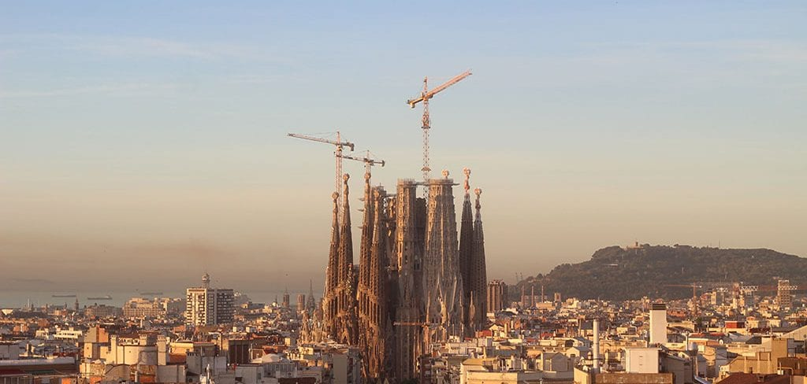

Error 137: We're having a short maintenance break.
The Basilica of the Sagrada Família has been under construction for 137 years, awaiting the city’s response to the application for a permit submitted in 1885 to the City Council of Sant Martí de Provençals, currently one of Barcelona’s neighbourhoods, as explained in a previous article. This request was accompanied by a blueprint of the ground plans signed by Antoni Gaudí. However, now the City Council has just approved the building permit for the project that Gaudí left designed upon his death, except for the half of the grand narthex or monumental porch that was planned for the Glory façade, located on Carrer de Mallorca. This pending part of the project will be resolved by a working commission provided for in the agreement signed on the 18th of October 2018 between the Barcelona City Council and the Junta Constructora del Temple Expiatori de la Sagrada Família. Parallel to the construction licence, and as a requisite for granting it, the activity licence for places of worship was also approved. This permission marks the conclusion of the proceedings initiated by the Junta Constructora with the goal of normalising the construction and finishing it in 2026.